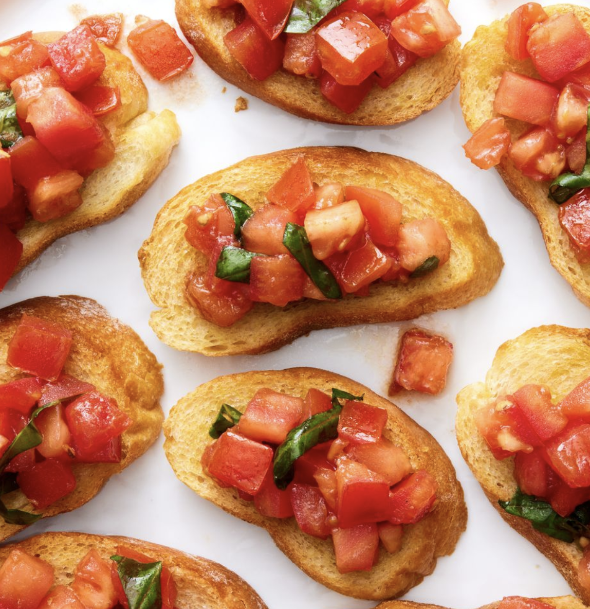

Summer Bruschetta

All in the Tomatoes
TThere's no debate: bruschetta was made for warm weather snacking. Easy to throw together and made up of simple, classic ingredients, it's the perfect dish to serve when you're craving something classic and refreshing.
Ingredients
- 1 tsp. kosher salt, divided
- 1/4 c. extra-virgin olive oil
- 2 cloves garlic, thinly sliced
- 4 large tomatoes, finely chopped
- 1/4 c. thinly sliced fresh basil
- 2 tbsp. balsamic vinegar
- Pinch of crushed red pepper flakes
Steps
- In a medium skillet over medium-low heat, heat oil. Add garlic and cook
- Add tomatoes and toss with 1/2 teaspoon salt
- Add basil, vinegar, red pepper, and remaining 1/2 teaspoon salt to bowl with tomatoes and toss to combine
- Brush bread on both sides with oil and arrange on large baking sheet
- Toast bread, turning halfway through, until dried and golden brown, 10 to 15 minutes
- Arrange bread on a platter. Spoon tomatoes on top of bread just before serving.